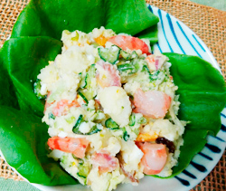

具沢山のポテトサラダ
- 調理時間：30 分
- （一人当たり）
- カロリー：356kcal
- たんぱく質：13.4g
- 脂質：18.7g
- 炭水化物：34.3g
- 塩分：1.3g


＜2人分＞
- ジャガイモ
- 2個(300g程度)
- 紫玉ねぎ(細切り)
- 1/4個
- キュウリ(小口切り)
- 1/2本
- ブロッコリーやサヤインゲンなどお好みの野菜
（各々サッとゆでる） - 100～150g
目安 - エビ（サッと下茹で）
- 2尾
- ゆでたまご
- 1個
- プロセスチーズ
- 30g
- マヨネーズ
- 大さじ1
- 練りからし
- 3g
- ・植物油
- 大さじ1
- ・酢
- 大さじ1
- ・塩、コショウ
- 適量
- サラダ菜(飾り用)
- お好みで
A


- 紫玉ねぎとキュウリは各々切って、塩（分量外）をふる。
水気はしっかりしぼっておく。 - それ以外の野菜は、必要に応じて茹でておく。
- エビは茹でて、一口大に切る。
ゆで卵、プロセスチーズは食べやすい大きさに切る。 - ジャガイモは、皮つきのまま、鍋に入れ、かぶるくらいの水を注ぎ、中火にかけて中までしっかり火を通す。
- 茹でたジャガイモは熱いうちに皮をむき、①の紫玉ねぎ、Aの調味料を加えて木べらで手早く混ぜる。
- 粗熱がとれたら、下準備したそれ以外の材料とマヨネーズ、練りからしをくわえて全体をよく和える。
塩、コショウ（分量外）で味をととのえて出来上がり。
具沢山のポテトサラダ
ポテトサラダは、大正時代に帝国ホテルで出されたのが始まりですが、当時は高級品であったため、一般的な家庭で食べられていたわけではありません。
日本に生野菜のサラダが登場するのは欧米の食習慣がはいってきた明治以降。食卓には戦後になって少しずつ定着していきます。日本の食文化は、衛生面からも野菜は加熱して食べるのが一般的でした。
昨今はポテトサラダ専門店も登場し、バラエティーに富んだレシピが楽しめます。野菜だけでなく、たんぱく源になる食材も加えれば、メインを張れる一品に。ご家庭のレシピをお楽しみください。